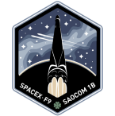

Mission 1
SAOCOM 1B, GNOMES-1,
Tyvak-0172
SpaceX's Falcon 9 will launch the second of the two satellite SAOCOM 1 satellites into a sun-synchronous polar orbit from SLC-40, Cape Canaveral AFS. SAOCOM 1B is a synthetic aperture radar Earth observation satellite to support disaster management.
The SAOCOM spacecraft are operated by CONAE, the Argentinian National Space Activities Commission, and are built by INVAP. This mission is also expected to include rideshare payloads Sequoia, and GNOMES-1. This will be the first polar launch from the Space Coast in 60 years. The launch azimuth will be southward and the booster will land at LZ-1